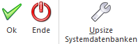

Es kann vorkommen, dass zwischen zwei Versionen eine Datenstandsänderung (hinzufügen von neuen Feldern oder Tabellen) durchgeführt wird. Wenn dies der Fall ist, müssen die Datenstände, mit denen man arbeitet, an diese neue Datenstruktur angepasst werden. Dies kann über den Menüpunkt
1 WinLine ADMIN
1 System
1 Upsize Datenstand
realisiert werden. Hierbei gibt es zwei Möglichkeiten, welche nachfolgend beschrieben werden:
ü Automatische Umstellung
In dem
Register Upsize Datenstand -
Automatisch können alle vorhandene Mandanten automatisch umgestellt
werden.
ü Manuelle Umstellung
In dem
Register "Manuell" (aktuelles Register") können einzelne Datenstände umgestellt
werden, wobei hier nicht nur eine Datenstandsaktualisierung durchgeführt werden
kann, sondern es kann auch ein Datenstand von einem Ort zu einem anderen
Transferiert werden, z.B. von einer Datenbank in eine andere oder
dergleichen.
D.h. mit dieser Methode kann nur ein einzelner Datenstand
umgestellt werden, wobei aber auch festgelegt werden kann, ob der Mandant eine
andere Mandantennummer bekommen soll oder ob der Mandant in eine andere
Datenbank abgelegt werden soll.
Quelle
In dem Bereich "Quelle" müssen die Daten des Ausgangsmandanten hinterlegt werden. Standardmäßig wird hier der erste Eintrag aus dem Fenster "Upsize Datenstand - Automatisch" vorgeschlagen bzw. der Eintrag, der in diesem Fenster aktiv war.
Ø Datenbanktyp
Hier wird der Typ der Datenbank eingegeben, die umgestellt werden soll. Aus der Auswahlliste kann der Datenbanktyp ausgewählt werden, wobei die Optionen DAO (MS-ACCESS-Datenbank), SQL-Server (MS-SQL-Server) und POS (PostGreSQL) verfügbar sind.
Ø Unicode
Bei Aktivierung dieser Checkbox wird der Datenstand des selektierten Mandanten auf Unicode umgestellt. Die Checkbox-Einstellung gilt für eine gesamte Datenbank, d.h. wenn mehrere Mandanten in einer Datenbank gehalten werden, werden alle Mandanten auf Unicode umgestellt. Die Checkbox ist standardmäßig nicht aktiviert.
Bei der Unicode-Umstellung werden alle Text- und Multiline-Spalten vom Typ "varchar" auf "nvarchar" umgestellt und Texte und Multiline-Felder von ANSI auf Unicode-Kodierung geändert (hierbei wird nach UCS-2 konvertiert (also 16-bit Unicodezeichen), wie es z.B. ab MS Windows 2000/XP für die interne Darstellung von Text verwendet wird).
Wahlweise kann das Upsizen des Mandanten auch ohne Unicode-Umstellung durchgeführt werden. Hierfür bleibt die Checkbox "Unicode" deaktiviert. Beim Upsizen werden keine Spalten auf Typ "nvarchar" umgestellt und keine Daten werden auf einer Unicodezeichen-Kodierung umgestellt.
Hinweis
Ein Upsize mit Unicode-Umstellung kann erheblich mehr Zeit in Anspruch nehmen als ein Upsize ohne Unicode-Umstellung, da wesentlich mehr Daten bei der Unicode-Umstellung 1x1 kopiert werden müssen. In dieser möglichen Zeitersparnis liegt der Vorteil von einem Upsize ohne Unicode-Umstellung.
Ein "ANSI"-Mandant (d.h. ein Mandant, welcher noch nicht auf Unicode umgestellt worden ist) kann nach wie vor in der WinLine verwendet werden. Hierbei werden die ANSI-Daten aus dem Datenstand gelesen und temporär für das Arbeiten im Programm auf Unicode umgestellt. Es gilt hierbei allerdings die Einstellung im MS Windows für die 'Sprache für Nicht Unicode Programme" für die Unicode-Umstellung der ANSI-Zeichen, welche vom ODBC-Treiber durchgeführt wird. Diese Tatsache führt dazu, dass bei Beibehaltung von ANSI Datenstände, den Umgang mit Sonderzeichen, z.B. bei osteuropäische Sprachzeichen, identisch zu früheren non-Unicodefähigen WinLine-Versionen bleibt.
Ø Pfad/Server:
Je nach Art des ausgewählten Database Typs müssen hier unterschiedliche Werte eingegeben werden:
ü DAO
Geben Sie hier den Pfad zu
dem Mandanten ein, welchen Sie upsizen wollen. Durch Drücken der F9-Taste können
Sie den Pfad suchen.
ü SQL/POS Server
Geben Sie hier
den Namen des Computers an, auf dem der SQL-Server installiert wurde.
Achtung
Wenn Sie einen Datenstand upsizen wollen, der sich auf einem SQL-Server befindet, muss in der entsprechenden Datenbank mindestens doppelt so viel Platz vorhanden sein, wie der Datenstand groß ist.
Ø Datenbank
Geben Sie den Datenbanknamen ein, durch Drücken der F9-Taste können Sie nach dem Mandanten suchen.
Ø Mandant
Im Normalfall kann dieses Feld nicht bearbeitet werden. Erst
wenn die Option "keinen neuen Mandanten anlegen" deaktiviert ist und der Button
 angeklickt wurde, kann aus der
Auswahlliste ein Mandant gewählt werden. In diesem Fall muss dann aber auch ein
alternatives Ziel gewählt werden.
angeklickt wurde, kann aus der
Auswahlliste ein Mandant gewählt werden. In diesem Fall muss dann aber auch ein
alternatives Ziel gewählt werden.
Ø Aktualisieren
Durch Anwahl dieses Buttons wird die Option "keinen neuen Mandanten anlegen" deaktiviert und der Inhalt der Auswahl "Mandant" aktualisiert.
Ø Passwort
Wenn der Datenbank des Mandanten ein Passwort hinterlegt wurde, muss dieser hier eingegeben werden. Dieses ist aber nur bei DAO möglich bzw. notwendig.
Ø keinen neuen Mandanten anlegen
Durch Aktivieren dieser Option wird eine Zwischendatenbank erzeugt, diese wird nach dem Upsizen auf den Namen der ursprünglichen Datenbank umbenannt. Dabei wird die alte Datenbank gelöscht.
Ø Sprache
Wählen Sie mit dieser Listbox-Einstellung die Sprache, welche für die Unicode-Umstellung bei dem Upsizen anzuwenden ist. Standardmäßig ist die Sprache aus der mesonic.ini hinterlegt (Parameter: Language=' '). Jede Sprache ist dabei mit einer bestimmten "Codepage" für die Umstellung von Daten von ANSI auf Unicode verbunden. Die folgenden Codepages werden bei der jeweiligen WinLine-Sprache für die Unicode-Umstellung verwendet:
|
Codepage |
Sprache |
|
1252 |
Deutsch |
|
1252 |
Englisch |
|
1251 |
Russisch |
|
1252 |
Italienisch |
|
1254 |
Türkisch |
|
1250 |
Ungarisch |
|
1250 |
Slowakisch |
|
1250 |
Tschechisch |
|
1250 |
Polnisch |
|
1252 |
Spanisch |
|
1250 |
Slowenisch |
|
1250 |
Rumänisch |
|
1250 |
Kroatisch |
|
1250 |
Albanisch |
|
1256 |
Farsi |
Bei Wahl einer "westeuropäische" Sprache, also einer Sprache, welche mit der Codepage "1252" verbunden ist, wird die Umstellung auf Unicode mit ALTER TABLE vom SQL Server selbst durchgeführt. Nur Tabellen mit Text-Spalten (Multiline) müssen nach wie vor kopiert werden, da das ALTER TABLE diese nicht umstellen kann.
Bei Wahl einer anderen Sprache für das Upsize wird die Unicode-Konvertierung von einer WinLine-internen Funktion anhand der hinterlegten Codepage-Zeichen durchgeführt. Dabei wird die Standardfunktion der ALTER TABLE vom SQL-Server nicht verwendet.
Ziel
Ø Datenstandsversion
An dieser Stelle wird die Datenstandsversion des Ziels angezeigt.
Ø Datenbanktyp
Aus der Auswahlliste kann zwischen den Einträgen DAO (ACCESS-Datenbank), SQL (SQL-Server) und POS (PostgreSQL) ausgewählt werden. Daher ist es sowohl möglich von DAO auf SQL upzusizen als auch umgekehrt, von SQL auf DAO zurückzugehen (eine so erstellte Datenbank [DAO-Datenbank] kann allerdings mit der WinLine nicht mehr bearbeitet werden).
Ø Pfad/Server:
Je nach Auswahl im Feld "Datenbanktyp" hat das nachfolgende Feld unterschiedliche Funktionen:
ü DAO
Pfad: - Hier wird der Pfad
eingetragen, auf den die neue MDB erzeugt werden soll.
ü SQL/POS-Server
Server: - Hier
wird der Name des Computers eingetragen, auf dem der SQL-Server installiert
ist.
Ø Datenbank
Eingabe der Datenbank, auf die der Mandant upgesized werden soll, wobei die entsprechende Datenbank am SQL-Server bereits angelegt sein muss.
Ø Mandant
Dieses Feld kann nur dann bearbeitet werden, wenn bei der Quelle aus der Auswahlliste "Mandant" ein einzelner Mandant ausgewählt wurde. Wenn dieses der Fall ist, erfolgt hier die Eingabe der Mandantennummer, die erzeugt werden soll. Im Normalfall wird die Zielmandantennummer gleich lauten wie die Ausgangsmandantennummer, es kann aber auch eine andere Mandantennummer vergeben werden. Dies wäre auch eine ideale Möglichkeit, sich einen Testdatenstand zu erzeugen, der den Echtdaten ähnlich ist.
Optionen
Ø Nach dem Aktualisieren Skripte ausführen
Bei gewissen Datenstandsänderungen ist es erforderlich, dass bestehende Daten nach der Umstellung an die neue Datenstruktur angepasst werden. Ist diese Option aktiv, werden solche Vorgänge automatisch durchgeführt.
Ø Betroffene Datenbankverbindung aktualisieren
Ist diese Checkbox aktiv, wird die Datenbankverbindung in gespeichert und in die Systemtabellen rückgeschrieben.
Ø Optimiertes Kopieren (nur geänderte Daten werden kopiert)
Durch Aktivieren dieser Option kann eine Datenstandsaktualisierung erheblich beschleunigt werden - solle bei großen Datenbeständen immer aktiv sein.
Ø Geänderte Tabellen nicht kopieren sondern mit ALTER TABLE direkt verändern
Wenn diese Checkbox aktiviert ist, dann werden Tabellen, bei denen neue Spalten im Zuge eines Updates hinzugekommen sind, einfach am Ende der Tabelle angefügt. Der Vorteil dieser Option ist, dass das verändern der Tabelle sehr rasch durchgeführt wird, im Gegensatz zum Kopieren der Tabelle, wo alle Daten über eine Zwischentabelle (temporäre Tabelle) in die neue Tabelle eingefügt werden.
Ø Beim Upsize eines Zentralmandanten die Verweise in den Filialmandanten anpassen
Diese Option wird nur dann verwendet, wenn ein Zentralmandant umbenannt wird. In diesem Fall muss die neue Mandantennummer auch in den Filialmandanten upgedatet werden.
Achtung
Die nächsten 3 Checkboxen können nur dann bearbeitet werden, wenn der Mandant aus einer Version 7.0 oder kleiner übernommen wird.
Ø Mandantenunabhängige Daten aus Quellmandant übernehmen
Ist die Checkbox aktiv, dann werden die mandantenunabhängigen Daten, die in älteren Programm-Versionen noch pro Mandant gespeichert wurden, in eine allgemeine Datenbank (MESOCMP.SRV) übernommen. Dabei handelt es sich um die Datenbereiche:
ü WinLine Listgenerator
ü KN8-Warenkatalog
ü Postleitzahlen
ü Bankleitzahlen
ü und vieles mehr
Bleibt die Checkbox inaktiv, werden die mandantenunabhängigen Daten nicht übernommen.
Ø Filter aus dem Quellmandanten übernehmen
Ist die Checkbox aktiv, dann werden die im Mandanten gespeicherten Filter, die in älteren Programm-Versionen noch pro Mandant gespeichert wurden, in eine allgemeine Datenbank (MESOCMP.SRV) übernommen. Bleibt die Checkbox inaktiv, werden die Filter nicht übernommen.
Ø Vorlagen aus dem Quellmandanten übernehmen
Ist die Checkbox aktiv, dann werden die im Mandanten gespeicherten Vorlagen, die in älteren Programm-Versionen noch pro Mandant gespeichert wurden, in eine allgemeine Datenbank (MESOCMP.SRV) übernommen. Bleibt die Checkbox inaktiv, werden die Vorlagen nicht übernommen.
Achtung
Wenn mehrere Mandanten die gleichen allgemeinen Daten beinhalten, so werden bestehende Daten überschrieben - d.h. es werden die Daten behalten, die im letzten Mandanten gespeichert sind.
Ø DEÜV Daten aus der Datenbank des Quellmandanten übernehmen
Mit dieser Option werden auch die DEÜV-Daten (nur bei deutschen LOHN-Mandanten) in die Zieldatenbank mit übernommen.
Ø Das Variablenaudit nicht übernehmen (T498 Einträge aus Vorversionen nicht bearbeiten)
Beim Upsize des Datenstandes wird auch das Datenaudit (Variablenaudit) umgestellt, das sich in der Version 11.0 geändert hat. Wenn die Option aktiviert ist, dann wird die Umstellung des Variablenaudits unterbunden. Standardmäßig ist die Checkbox aktiviert. Die Umstellung des Datenaudits kann nachträglich jederzeit über die Datentools mit der Option /CONVERTVARAUDIT nachgeholt werden.
Buttons

Ø Ok
Durch Drücken des Buttons "Ok" bzw. der Taste F5 wird die Umstellung gestartet.
Hinweis
Nachdem die Umstellung gestartet wurde, wird der Fortschritt in einem eigenen Fenster dargestellt. In diesem Fenster besteht auch die Möglichkeit die Umstellung durch Drücken des Abbruch-Buttons zu beenden.

Anschließend erscheint eine Meldung, dass die Umstellung unterbrochen wurde, und eine weitere, dass die Umstellung nicht beendet wurde. Diese Fehlermeldungen sind natürlich auch in der Protokoll-Datei (mit dem Namen "Upsize Log(Uhrzeit).SPL") enthalten, die bei der Umstellung erzeugt wurde.
Ø Ende
Durch Drücken des Buttons "Ende" bzw. der ESC-Taste wird das Fenster geschlossen.
Ø Upsize Systemdatenbanken
Durch Anklicken dieses Buttons wird für die Systemdatenbank(en) ein Upsize durchgeführt, d.h. die Tabellenstruktur wird entsprechend der aktuellen Tabellenbeschreibung erstellt. Das Ergebnis wird am Bildschirm angezeigt.